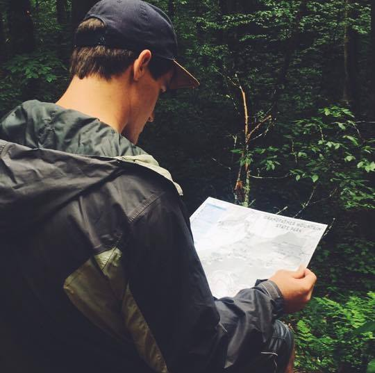

Andrew Brown
I am a Senior at Texas State University. I will be graduating in May with a B.S. in GIS and a minor in Computer Science. I'm currently an intern at a gas pipeline company and looking to pursue a career in the energy industry.
Keagan
My name is Keagan McNew, I am a second year masters student at Texas State University. I received my undergraduate degree at Texas State University, where I majored in physical geography and minored in geology; I also received a GIS certificate.
Harper

I am a senior majoring in Geographic Information Systems and minoring in Business Administration. My favorite colors are yellow, blue, and gray. I am looking to pursue a career in subway transportation.